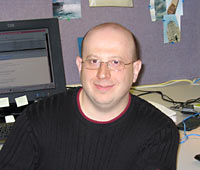

News Archives : 2005 : Third-Annual Merck Awards for Genome-Related Research Announced
by Charlie Schmidt
March 30, 2005
Harvard students and faculty gathered with representatives from Merck on March 21 to congratulate the latest winners of the Merck Genome-Related Research Awards. The awards are given as part of a five-year gift through MCB to support genomics research in the Faculty of Arts and Sciences (FAS). A pair of one-year postdoctoral fellowships, valued at $50,000 each, and one-year pilot research projects awarded to four FAS faculty, valued at $20,000 each, were funded by the awards program; which is now in its third year. A committee that includes scientists from Merck, FAS, and the Harvard Medical School chose the recipients.
"The future of all pharmaceutical companies including Merck depends on the innovative basic research that comes from institutions such as Harvard," said Mervyn Turner, Merck Senior Vice President for Worldwide Licensing & External Research, who was in attendance. "We believe that genomic research and its application to larger biological questions will enable us to find novel solutions in major, unmet areas of medical need. So, we’re interested in hearing what the awards are being used for and we look forward to continuing our support." Joining Turner at the lunchtime gathering was Robert Gould, Executive Director of Pharmacology at Merck Research Laboratories.
Before introducing the award winners, MCB Chair and Professor of Molecular and Cellular Biology Andrew Murray voiced his "enormous pleasure" in welcoming the Merck visitors. "Merck’s gift allows us to support research in genomics and biology as interpreted in the broadest sense," he said. "These awards encourage innovation in interesting but otherwise unfundable ideas in academia."
A Summary of Awardees’ Research
|  Igor Berezovsky
|
The first recipient to speak was Igor Berezovsky, a postdoctoral fellow with Professor Eugene Shakhnovich from the Department of Chemistry and Chemical Biology. Berezovsky won for his proposed research on theoretical models for mechanisms of protein adaptation in bacteria. His specific goal is to distinguish genome and protein components derived from evolutionary adaptation from those derived by lateral transfer, or the exchange of sequences among organisms. Berezovsky is particularly concerned with thermo-adaptation, meaning adaptation to extremely hot environments. "We’d like to use high-throughput analysis of genomes and proteomes to identify new mechanisms for thermostability," he said. "[From this], we may be able to identify factors that cause proteins to become misfolded." Berezovsky also plans to uncover adaptation mechanisms for other extreme environments, such as those caused by high pressure, salinity, or intense radioactivity.
Next to speak was Ji Yu, a postdoctoral fellow with Professor Xiaoliang Sunney Xie, also from the Department of Chemistry and Chemical Biology. Yu won a fellowship to advance his proposed method for analyzing gene expression in E. coli. The method employs a biomarker composed of green fluorescent protein fused to a genetic coding sequence. This complex generates a protein domain that travels to the cell membrane, where it becomes immobilized. According to Yu, these membrane-anchored proteins are much easier to detect than proteins traveling throughout the interior of the cell. Thus, the method is ultrasensitive and could allow scientists to study gene expression that occurs at very low levels, in addition to single proteins in real-time. Unlike high-level gene expression, which produces protein continuously at a given rate, low-level expression occurs in a stochastic "pulse" of discreet production events, Yu said. The sensitivity of the new method should advance knowledge of these stochastic transcription patterns, he added.
The following speaker was Irene Garcia Newton, a graduate student in the laboratory of Colleen Cavanaugh, the Edward C. Jeffrey Professor of Biology in the Department of Organismic and Evolutionary Biology (OEB). Cavanaugh, who is on sabbatical and could not attend, was awarded a one-year pilot research project to study the genomes of chemosynthetic symbionts, which are bacteria that live inside a wide array of invertebrate tissue cells. By engaging in "mutualistic" relationships with their host cells, these bacteria provide fixed carbon in exchange for the substrates needed for chemosynthesis (reduced sulfur species and oxygen), which is critical to the bacteria’s metabolism. Garcia Newton said most knowledge of bacteria/eukaryotic relationships derives from studies of bacterial pathogens. The pilot research project will determine if chemosynthetic symbionts also use virulence genes to invade and grow within animal cells. These studies will shed light on the genetics of host/symbiont interactions and perhaps provide new strategies for antibiotic drug intervention, Garcia Newton said.
The next speaker was Yuk Fai Leung, a postdoctoral fellow with John Dowling, the Llura and Gordon Gund Professor of Neuroscience at MCB. Dowling received a one-year pilot research project award to study the genetic control of retinal development and differentiation in zebrafish. According to Leung, a mutation in a gene called brg1 prevents normal retinal lamination, the process by which neurons in the eye form functional layers. In a pilot study, Leung has identified several genes that are down-regulated in the brg1 mutant. Follow-up studies have shown these same genes, when inactivated using antisense technology, produce a phenotype that is strikingly similar to that induced by the brg1 mutation. The findings suggest these downstream genes play important roles in the normal formation of the eye. In the current project, 15,000 genes will be screened for their involvement in early retinal development and differentiation processes. "These studies will surely reveal more genes and pathways that are responsible for controlling retinal differentiation in zebrafish," Leung said.
Thanat Chookajorn, an Ellizon postdoctoral fellow with Daniel Hartl, the Higgins Professor of Biology at OEB, continued the discussion. Chookajorn and Hartl were awarded a one-year research project to investigate mechanisms of sex cell determination among lower eukaryotes. The goal is to compare "anisogamous" eukaryotes, which produce easily identifiable male and female sex cells, with "isogamous" eukaryotes, whose male and female sex cells are virtually indistinguishable. An example of an anisogamous eukaryote is Plasmodium falciparum, the organism responsible for malaria. Scientists today have little knowledge of how P. falciparum generates sex cells, or how these cells interact during reproduction. Chookajorn’s comparative research will investigate the life cycles of two model isogamous species of algae: Chlamydomonas gigantea and Chlamydomonas zimbabwiensis. Based on these investigations, Chookajorn will select one species for genetic analysis. These subsequent studies will allow him to compare the genetics of isogamous and anisogamous processes, possibly leading to new insights for the control of Plasmodium transmission.
Also awarded a one-year research project was Andrew McMahon, the Frank B. Baird, Jr., Professor of Science at MCB. McMahon, who was not in atttendance, won for his proposed strategy to simultaneously identify and track daughter cells within any lineage in the mouse. Current techniques for tracking daughter cells, based on the recombinant production of cells expressing fluorescent proteins, were developed initially for use in Drosophila.This approach has since been extended to mice, but the fluorescence is poor and thus does not allow for additional investigations into the genetic controls that guide daughter cell behavior. McMahon’s approach overcomes this limitation by coexpressing fluorescent proteins and a given gene through the use of a novel vector. This vector, developed in McMahon’s laboratory, is based on the interaction of a yeast transcriptional factor, GAL4, with its target recognition sequence, the Upstream Activating Sequence (UAS). The GAL4/UAS system has already been shown to regulate gene activity in mice. More recent work shows the system produces high levels of fluorescent protein in the marked cell and the experimental gene under investigation.
The Merck awards demonstrate the strong relationships that Harvard scientists share with their industry colleagues. The research was notable both for its application to fundamental science and also to the broader goal of improving medical care. "This support encourages people at Harvard to do new and interesting things," said Andrew Murray at the close of the awards ceremony. "We offer our thanks to the selection committee, to those who received the awards, to Merck, and especially to Mervyn [Turner], who had the wisdom and foresight to create this program."
| Postdoctoral Awards The one-year fellowships provide support to each postdoctoral fellow with more than two but less than five years of postdoc experience. Especially encouraged to apply are those whose work is interdisciplinary in the sense that their intellectual activities extend beyond their own laboratory. This year's awardees are:
|